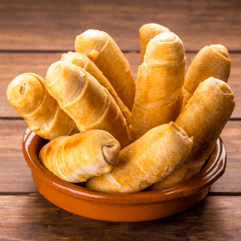

Tequeños

The Tequeño of My Dreams
Tequeños are a fried breaded cheese stick or a spear of bread dough with queso blanco (fresh cheese) stuffed in the middle, and is a popular meal or snack in Venezuela.
To prepare it, the dough is wrapped around a cheesestick and formed into a breadstick so it can be fried in oil or sometimes oven-baked.
Tequeños can be eaten for breakfast, as a side appetizer, or as a snack food at parties and weddings.
Think mozzarella stick, but replace the mozzarella with a squeaky and salty queso blanco, and sub out the breadcrumb coating for a pastry-like shell. It's Amazing
Tequeños Ingredients
- 1lb of semi-hard queso blanco (white cheese)
- 2 cups of all-purpose flour
- 5 tablespoons of butter
- 1 egg
- 1/2 teaspoon of salt
- 2 tablespoons of sugar
- 4-5 tablespoons of cold water
- 4cups of corn oil
How To Make Tequeños
- Prepare cheese by cutting into strips approximately 3/4 inch by 2 3/4 inches long.
- Place flour on large flat surface; shape into circle with hole in center. Combine egg and butter in hole.
Mix salt, sugar and cold water together in small bowl. Add mixture slowly to flour, combining everything with hands.
Keep mixing and kneading until dough is no longer sticky. When ready, shape into a ball and let it rest 1/2 hour at room temperature.
- Scatter flour on a clean, flat surface.
After 1/2 hour has passed, place dough ball on surface and roll into a square approximately 1/8 inch thick.
Using a sharp knife, cut the flattened dough into long uniform strips until there is one strip for each piece of cheese.
- Place a piece of queso blanco at one end of the first strip and roll it up until it is completely covered by dough.
Make sure to press any open edges together to seal cheese in the dough completely, so that it does not leak out when it is fried.
Repeat this with the rest of the cheese pieces.
- Heat the oil in a frying pan over a high flame. Once the oil is hot, lower the flame to a medium setting.
Carefully, fry the tequeños until golden brown and crunchy.
- As you remove tequeños from oil, place on pieces of paper towels to absorb any excess oil.